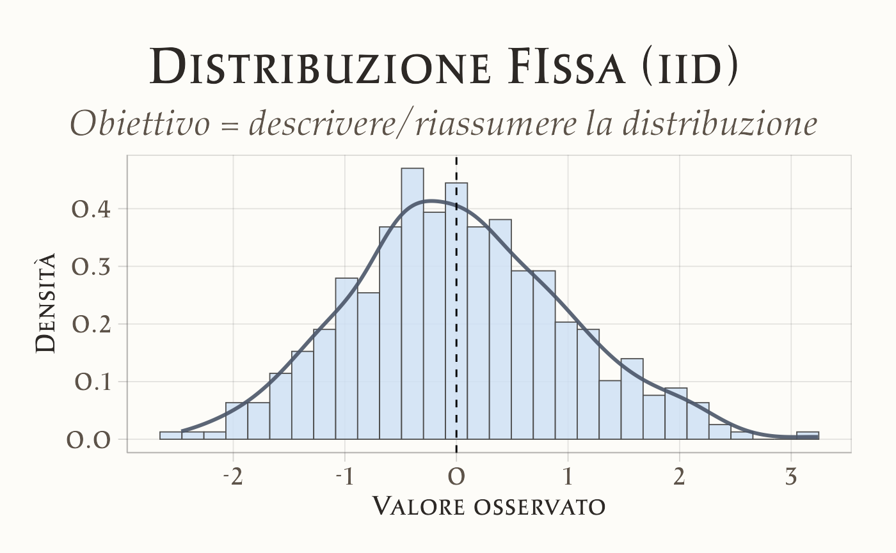
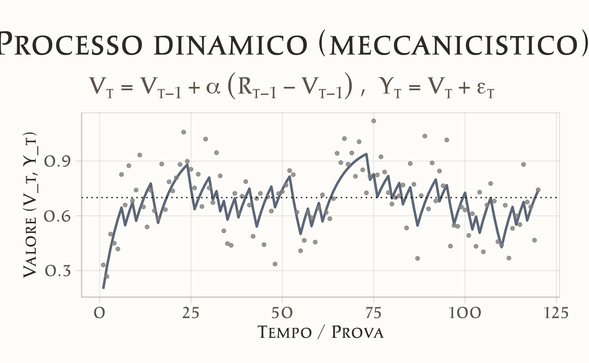
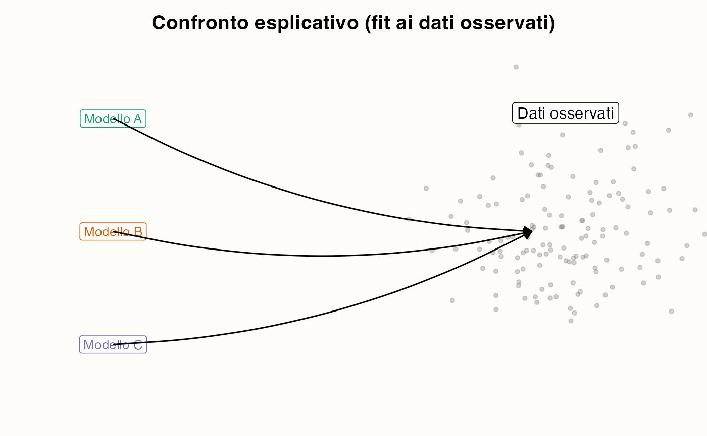
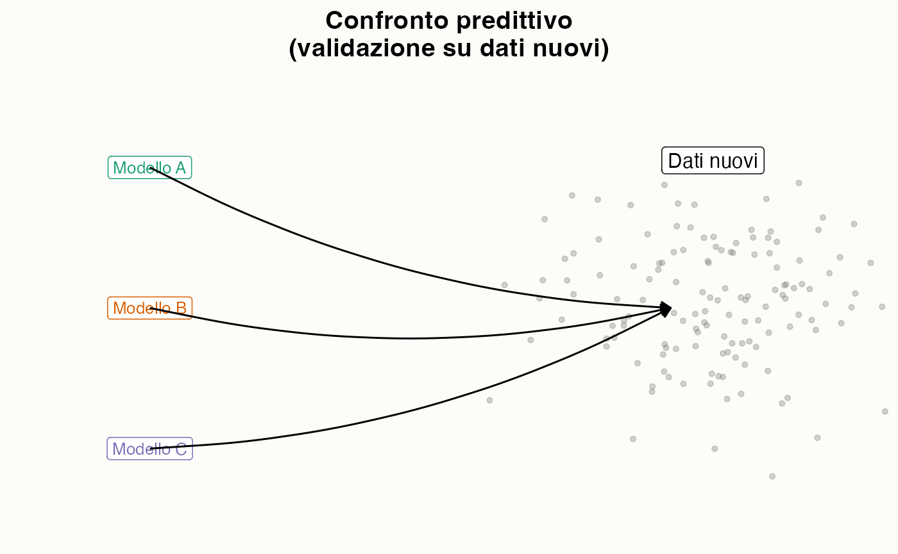

5 Modelli statistici
“Statistical models are not about the data, they are about how the data are generated.”
— David A. Freedman, Statistical Models and Causal Inference
Introduzione
Negli ultimi anni, la psicologia ha vissuto un profondo ripensamento metodologico, sollecitato dalla cosiddetta crisi della replicabilità. Una delle critiche principali emerse in questo dibattito riguarda la tendenza della ricerca tradizionale a concentrarsi prevalentemente sull’identificazione di associazioni statistiche tra variabili, trascurando spesso la modellazione dei processi psicologici sottostanti che potrebbero aver generato i dati osservati.
Sebbene questo approccio descrittivo possa rivelarsi utile in determinate circostanze, esso presenta due limiti fondamentali. In primo luogo, tende a produrre risultati fragili e di difficile replicazione, poiché le relazioni identificate non sono ancorate a una teoria solida riguardante i meccanismi causali che le generano. In secondo luogo, contribuisce a mantenere un divario tra la psicologia e altre discipline scientifiche – come la fisica, la biologia o l’economia – che da tempo fondano il proprio progresso sulla costruzione di modelli formali in grado di rappresentare esplicitamente i processi sottostanti ai fenomeni osservati.
Panoramica del capitolo
- Cosa significa descrivere i dati rispetto a spiegare i processi che li generano.
- I limiti dei modelli fenomenologici e perché possono indurre in errore.
- Il ruolo delle distribuzioni di probabilità per rappresentare l’incertezza.
- Come confrontare modelli alternativi e scegliere quelli che meglio descrivono i dati e generalizzano a nuovi contesti.
5.1.1 Dalla correlazione alla spiegazione
Un modello che si limita a stimare una correlazione o una regressione lineare può dirci se due variabili si muovono insieme, ma non ci dice perché accade. Per esempio: osservare un’associazione tra stress e rendimento accademico è informativo, ma non basta per capire il processo attraverso cui lo stress influisce (o non influisce) sulla performance.
Il passo avanti consiste nel cercare di rappresentare come i dati emergono da processi psicologici sottostanti. In altre parole, spostiamo l’attenzione dalle semplici relazioni osservate ai meccanismi generativi che le producono.
5.1.1.1 Perché questo cambiamento è cruciale?
Questo cambiamento è cruciale perché permette di costruire modelli più vicini alla realtà dei fenomeni psicologici, rende le teorie più precise e testabili, e fornisce risultati più robusti e potenzialmente più replicabili, poiché radicati in una rappresentazione del processo e non solo in un dato campione.
5.1.2 Anticipazione
Nei prossimi paragrafi vedremo come questo approccio si traduca in pratica: non ci limiteremo a presentare i modelli di regressione nelle loro diverse varianti, ma esploreremo anche modelli che cercano di descrivere processi psicologici espliciti, come ad esempio il modello di Rescorla-Wagner per l’apprendimento associativo.
L’obiettivo non è sostituire l’analisi statistica classica, ma integrarla con strumenti che ci aiutino a rispondere a una domanda più ambiziosa: quali processi mentali plausibili possono aver generato i dati che osserviamo?
5.2 Campionamento indipendente da una distribuzione fissa
Molti modelli statistici tradizionali si basano sull’assunzione fondamentale che i dati osservati rappresentino un processo di campionamento indipendente da una distribuzione fissa. Prendiamo ad esempio il caso dei punteggi di ansia misurati in un campione di studenti: si assume che questi punteggi seguano una distribuzione normale caratterizzata da una media \(\mu\) e una deviazione standard \(\sigma\).
In questo quadro concettuale:
- ogni singola osservazione viene considerata come un’estrazione indipendente dalla stessa distribuzione di probabilità sottostante;
- l’obiettivo principale del modello statistico diventa quindi la stima dei parametri che definiscono questa distribuzione (\(\mu\) e \(\sigma\)).
Questo approccio presenta indubbi vantaggi per la descrizione sintetica dei dati e l’identificazione delle loro caratteristiche distributive fondamentali. Tuttavia, è importante riconoscere i suoi limiti concettuali: questa prospettiva rimane essenzialmente muta riguardo ai meccanismi attraverso i quali i livelli di ansia effettivamente emergono o si modificano nel tempo. In altre parole, descrive i dati nella loro manifestazione osservabile (“così come sono”), ma non offre alcuna insight sui processi psicologici dinamici che li hanno generati.
5.3 Modelli fenomenologici: descrivere le associazioni
Un passo in più è rappresentato dai modelli che analizzano relazioni tra variabili, come la regressione lineare o logistica. Questi approcci ci permettono di andare oltre la semplice descrizione di una distribuzione, consentendoci di studiare sistematicamente come una variabile dipendente cambia in funzione di una o più variabili indipendenti.
Per esempio, possiamo modellare la relazione tra stress e rendimento accademico, verificando empiricamente se un aumento dei livelli di stress corrisponde effettivamente a un calo delle performance scolastiche.
Questi modelli statistici sono estremamente diffusi e costituiscono il fondamento metodologico di gran parte della ricerca psicologica contemporanea. Tuttavia, è importante riconoscere che rimangono essenzialmente modelli fenomenologici: descrivono efficacemente che cosa accade (documentando ad esempio l’esistenza di una correlazione tra stress e rendimento), ma non sono in grado di spiegare perché tale relazione esista.
Un modello di regressione, infatti, non può dirci se lo stress riduce direttamente il rendimento, se entrambe le variabili sono influenzate da un fattore terzo (come il supporto sociale), o se la relazione evolve nel tempo attraverso complesse dinamiche di adattamento psicologico. Questa fragilità metodologica ha contribuito direttamente alla crisi di replicazione: modelli che descrivono soltanto associazioni spesso sembrano solidi in uno studio, ma non riescono a replicarsi in altri contesti, proprio perché non si appoggiano a un processo generativo condiviso.
5.4 Modelli meccanicistici: spiegare i processi
I modelli meccanicistici, detti anche processuali, rappresentano un passo ulteriore rispetto ai modelli puramente statistici. Questi modelli non si limitano a descrivere associazioni tra variabili, ma cercano di formalizzare i meccanismi psicologici che generano i dati osservati.
Questi modelli sono costruiti a partire da ipotesi specifiche su come le persone percepiscono, apprendono, decidono o reagiscono a stimoli. Ogni parametro del modello possiede un significato psicologico interpretabile, come ad esempio la velocità di apprendimento, una soglia decisionale, o la sensibilità a ricompense e punizioni. In questa prospettiva, i dati non sono più considerati come semplici estrazioni indipendenti da una distribuzione fissa, ma come l’esito dinamico di un processo psicologico sottostante.
Un esempio particolarmente illustrativo è il modello di Rescorla-Wagner per l’apprendimento associativo. Questo modello descrive come la forza di un’associazione tra stimoli viene aggiornata a ogni prova in base all’errore di previsione commesso dall’individuo. In questo caso, non ci limitiamo a stimare se “esiste un effetto” di uno stimolo, ma modelliamo esplicitamente il processo di apprendimento che produce le risposte osservate, offrendo così una comprensione più profonda e meccanicistica del fenomeno psicologico in esame. Modelli di questo tipo, radicati in un processo psicologico esplicito, hanno il potenziale di produrre risultati più robusti e replicabili: se il modello cattura davvero il meccanismo sottostante, allora la sua applicazione a nuovi dati dovrebbe confermare le stesse dinamiche di base, anche se le osservazioni specifiche cambiano.
5.4.1 Confronto tra i due approcci
I modelli fenomenologici offrono il vantaggio della semplicità e sono spesso sufficienti per una descrizione iniziale dei dati. Tuttavia, questa semplicità comporta un rischio significativo: tendono a produrre spiegazioni fragili e poco replicabili, in quanto catturano relazioni superficiali senza indagare i meccanismi sottostanti.
Al contrario, i modelli meccanicistici richiedono un maggior numero di ipotesi iniziali e presentano una complessità analitica superiore. Questo investimento aggiuntivo viene ricompensato da un fondamentale vantaggio epistemologico: ci avvicinano alla logica metodologica delle scienze naturali, permettendoci di spiegare i dati osservati attraverso la formalizzazione di processi generativi sottostanti. In questo modo, non ci limitiamo a descrivere le relazioni tra variabili, ma cerchiamo di comprendere i meccanismi causali che le producono.

Modello fenomenologico: il focus è sulla forma della distribuzione e sui suoi parametri riassuntivi (media, varianza).

Modello meccanicistico: il focus è sul meccanismo nel tempo (apprendimento): \(V_t\) evolve in base all’errore di previsione e le osservazioni \(Y_t\) sono rumore attorno a \(V_t\).
**Messaggio chiave:* descrivere associazioni vs spiegare processi generativi.
5.5 Valutazione e confronto dei modelli
Ogni modello psicologico, che sia descrittivo o meccanicistico, costituisce una rappresentazione semplificata della realtà. Nessun modello può catturare interamente la complessità dei fenomeni psicologici: il suo valore scientifico dipende fondamentalmente dalla capacità di aiutarci a comprendere e prevedere i dati osservati.
5.5.1 Due prospettive complementari
La valutazione dei modelli si articola su due dimensioni distinte ma complementari. Da un lato l’adeguatezza esplicativa, che misura quanto bene un modello riesce a descrivere i dati già osservati. Dall’altro la capacità predittiva, che valuta invece l’abilità del modello di generalizzare a nuovi dati non ancora raccolti.
È importante notare come queste due dimensioni non sempre coincidano: un modello eccessivamente complesso può adattarsi perfettamente ai dati esistenti, mostrando un’eccellente adeguatezza esplicativa, ma rivelarsi al contempo incapace di fare previsioni accurate su dati nuovi, manifestando così una scarsa capacità predittiva.
5.5.2 Confrontare i modelli
La crisi di replicazione ci ricorda che non basta adattare bene un modello ai dati disponibili: ciò che conta è la capacità di prevedere dati nuovi. È proprio qui che la valutazione e il confronto dei modelli diventano strumenti centrali per una psicologia più solida.
Il confronto tra modelli rappresenta un aspetto cruciale della ricerca scientifica, poiché riconosce che per uno stesso fenomeno possono esistere multiple spiegazioni plausibili. Il compito del ricercatore consiste nell’identificare il modello che produce le rappresentazioni più utili e coerenti con la realtà osservata.
Questo confronto può avvenire sia tra approcci diversi che all’interno dello stesso paradigma. I modelli fenomenologici e meccanicistici, ad esempio, possono essere messi a confronto: mentre il primo si limita a descrivere le associazioni tra variabili, il secondo avanza ipotesi specifiche sui processi generatori dei dati. Allo stesso modo, due modelli meccanicistici alternativi – come diverse teorie dell’apprendimento – possono essere confrontati per determinare quale meglio spieghi il comportamento osservato.
5.5.3 Anticipazione
Nei prossimi capitoli esploreremo le metodologie concrete per condurre questi confronti, introducendo strumenti statistici che quantificano oggettivamente la bontà predittiva dei modelli. In particolare:
approfondiremo criteri statistici come la log-verosimiglianza, il WAIC e il LOO-CV, che permettono un confronto formale delle capacità predittive dei modelli;
esamineremo casi di studio psicologici in cui modelli alternativi – come diversi modelli di apprendimento o processi decisionali – vengono sottoposti a verifica empirica sugli stessi dati.
Questo approccio ci permetterà di passare da valutazioni qualitative a giudizi quantitativi e rigorosi sulla bontà dei nostri modelli teorici.


I modelli possono essere valutati secondo due prospettive fondamentali: quella esplicativa e quella predittiva.
La valutazione esplicativa (o fit del modello) misura quanto bene un modello riesce a descrivere i dati già osservati, ovvero quanto sia in grado di adattarsi alle informazioni in nostro possesso.
La valutazione predittiva (o validazione del modello) misura invece la capacità del modello di generalizzare, ovvero di fare previsioni accurate su dati nuovi, non ancora osservati e provenienti da outside del campione originario.
Il messaggio chiave è che un modello statisticamente valido non è solo quello che spiega bene il passato, ma soprattutto quello che dimostra di saper prevedere in modo affidabile il futuro. La vera prova della bontà di un modello risiede nella sua capacità predittiva, non solo in quella descrittiva.
5.5.4 Un esempio psicologico: scelte alimentari negli adolescenti
Immaginiamo di voler studiare le scelte alimentari di un gruppo di adolescenti, osservando se scelgono uno snack salutare o non salutare in una serie di decisioni.
Approccio fenomenologico Possiamo costruire una regressione logistica che predice la probabilità di scegliere lo snack salutare in funzione di alcune variabili, ad esempio il livello di stress e la disponibilità economica. Questo modello ci direbbe se lo stress è associato a una minore probabilità di fare scelte salutari, senza però chiarire perché avvenga.
Approccio meccanicistico Possiamo invece ipotizzare un modello di apprendimento associativo (ad esempio il modello di Rescorla–Wagner): ad ogni prova, l’adolescente aggiorna le proprie aspettative di ricompensa per ciascuna opzione sulla base dell’esperienza precedente. In questo quadro, i dati delle scelte non sono solo correlati a variabili esterne, ma sono l’esito di un processo dinamico di apprendimento governato da parametri interpretabili (tasso di apprendimento, sensibilità alla ricompensa, variabilità decisionale).
5.5.4.1 Confronto dei due modelli
Entrambi i modelli possono adattarsi agli stessi dati, ma offrono spiegazioni molto diverse: la regressione descrive un’associazione “statica” tra stress e scelta, mentre il modello di apprendimento descrive un meccanismo dinamico, cioè come gli adolescenti aggiornano le loro preferenze. Valutare e confrontare i modelli significa allora chiedersi quale delle due rappresentazioni sia più utile: quella che ci dice solo quali variabili sono correlate, o quella che propone un processo psicologico plausibile alla base delle decisioni?
Riflessioni conclusive
In questo capitolo abbiamo distinto tra due modi di intendere i modelli in psicologia:
- i modelli fenomenologici, che descrivono le relazioni osservabili tra variabili;
- i modelli meccanicistici, che cercano invece di rappresentare i processi psicologici che generano i dati.
I primi hanno il vantaggio della semplicità e forniscono un punto di partenza utile per descrivere i fenomeni. I secondi, più complessi, ci permettono però di avvicinarci a una spiegazione: ci dicono non solo che cosa accade, ma anche come e perché accade.
Abbiamo visto che la psicologia, per rafforzare la propria solidità scientifica, non può limitarsi all’analisi delle associazioni. È necessario un salto verso modelli che mettano al centro i meccanismi generativi. Solo così possiamo rendere le nostre teorie più precise, più testabili e più replicabili.
Un altro punto fondamentale riguarda la valutazione dei modelli: non esiste un modello “vero” in senso assoluto, ma modelli più o meno utili. Per questo dobbiamo sempre confrontare alternative, verificare la loro capacità di spiegare i dati raccolti e soprattutto la loro forza nel prevedere dati nuovi.
Nei prossimi capitoli passeremo dal livello concettuale a quello operativo, vedendo come l’approccio bayesiano ci consenta di costruire e confrontare concretamente modelli fenomenologici e meccanicistici.